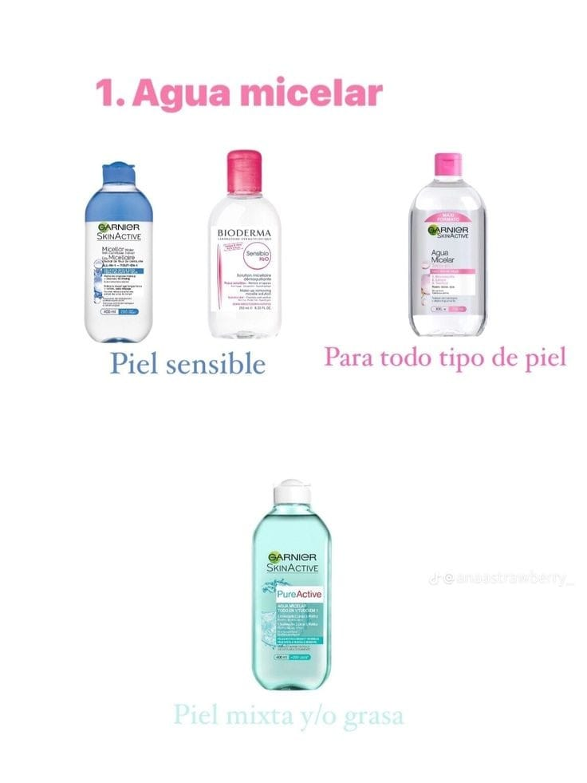
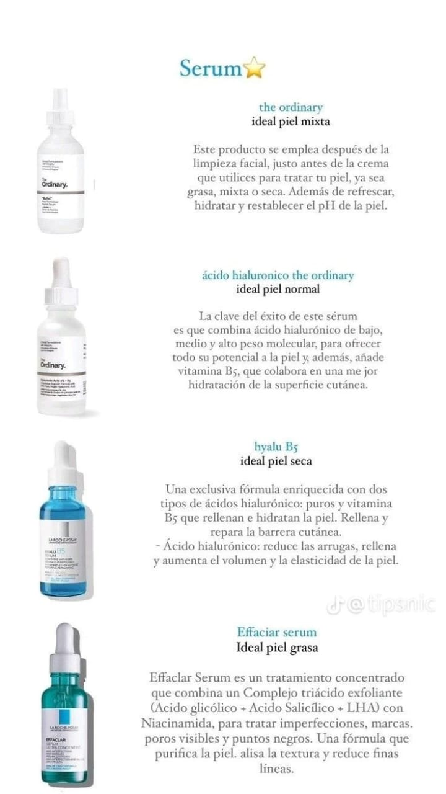
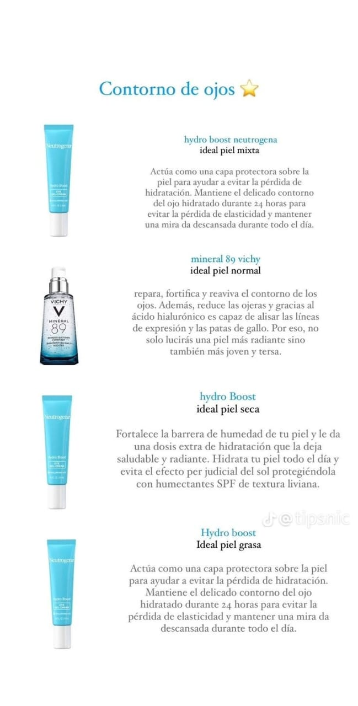
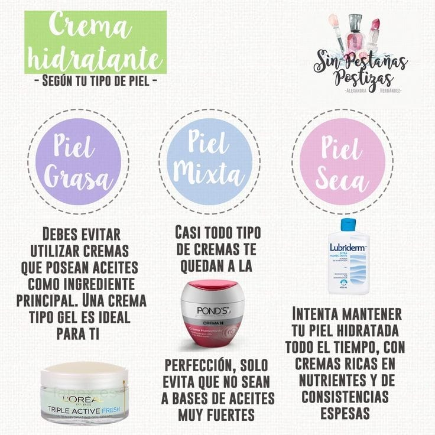
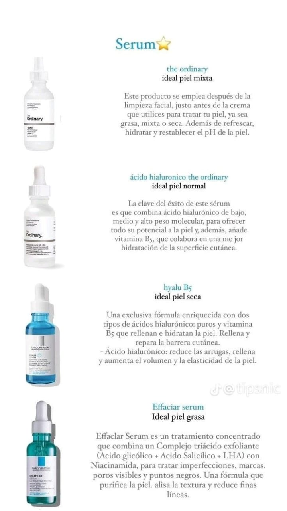
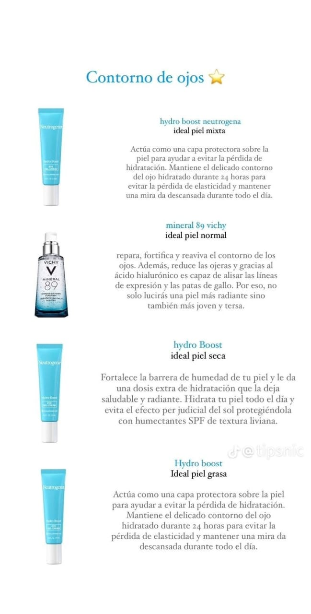
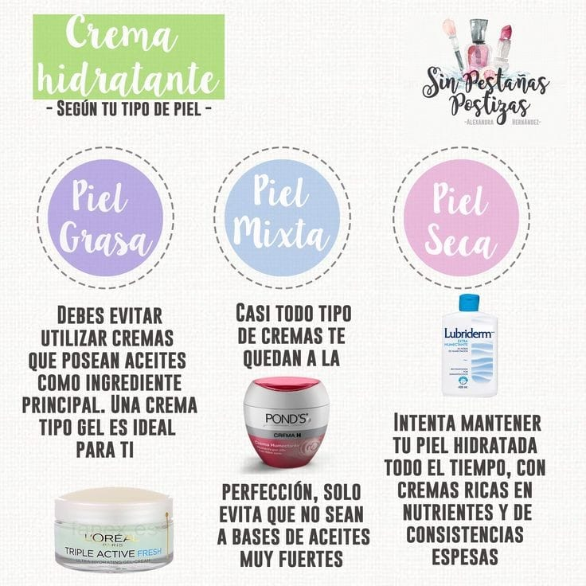

¿CUALES SON LOS TIPOS DE PIELES QUE EXISTE?
Los tipos de piel que pueden existir se clasifican principalmente en estos cinco tipos básicos:

CUIDADOS PARA CADA TIPO DE PIEL
Para el cuidado de una piel normal, que es equilibrada y no presenta problemas extremos como sequedad excesiva o exceso de grasa, se recomienda una rutina básica pero efectiva que incluya los siguientes pasos:
-
Limpieza suave:Utiliza un limpiador suave, preferiblemente sin fragancias ni ingredientes irritantes. Limpia tu rostro dos veces al día (por la mañana y por la noche) para eliminar el exceso de grasa, suciedad y restos de maquillaje.
-
Hidratación: Aunque la piel normal no requiere una hidratación intensiva, es importante mantenerla hidratada para preservar su equilibrio natural. Usa una crema hidratante ligera que se absorba fácilmente y que contenga ingredientes como ácido hialurónico, glicerina o ceramidas.
-
Protección solar: Aplica protector solar todos los días, incluso si no planeas estar mucho tiempo al aire libre. El protector solar ayuda a prevenir el envejecimiento prematuro de la piel y protege contra los daños causados por los rayos UV.
-
Exfoliación suave (opcional): Puedes exfoliar la piel una o dos veces por semana para eliminar las células muertas y mantenerla fresca y radiante. Opta por exfoliantes suaves y evita frotar con fuerza para no irritar la piel.
-
Cuidado adicional según necesidades: Si notas cambios en tu piel debido a factores como el clima o el estrés, ajusta tu rutina de cuidado según sea necesario. Por ejemplo, podrías necesitar una hidratación adicional en invierno o un tratamiento calmante si tu piel se vuelve sensible ocasionalmente.
-
Alimentación y estilo de vida saludables: Beber suficiente agua y seguir una dieta equilibrada rica en frutas, verduras y ácidos grasos esenciales puede contribuir a mantener la salud general de la piel.
.jpeg)
El cuidado de la piel sensible requiere una atención especial para evitar irritaciones y mantener la piel calmada y equilibrada. Elige productos suaves y sin fragancia: Opta por limpiadores, cremas hidratantes y productos para el cuidado de la piel que estén diseñados específicamente para pieles sensibles y que sean libres de fragancias y colorantes. Busca productos que contengan ingredientes calmantes como aloe vera, caléndula o centella asiática.
-
Limpieza suave: Limpia tu piel con suavidad utilizando un limpiador suave y no abrasivo. Evita frotar con fuerza y usa agua tibia en lugar de agua caliente, que puede ser irritante para la piel sensible.
-
Hidratación constante: Es importante mantener la piel bien hidratada para fortalecer la barrera protectora de la piel y reducir la sensibilidad. Usa una crema hidratante suave y sin alcohol dos veces al día, especialmente después de la limpieza.
-
Protección solar: La piel sensible puede ser más propensa a las quemaduras solares y al enrojecimiento debido a los rayos UV. Aplica un protector solar suave y de amplio espectro todos los días, incluso en días nublados o en interiores.
-
Evita ingredientes irritantes: Verifica las etiquetas de los productos para evitar ingredientes conocidos por ser irritantes, como alcohol, fragancias sintéticas, sulfatos y parabenos.
-
Prueba de sensibilidad: Antes de usar un nuevo producto, realiza una prueba de sensibilidad en una pequeña área de la piel para asegurarte de que no cause irritación o reacción alérgica.
-
Tratamientos adicionales con precaución: Si usas tratamientos como exfoliantes químicos o mascarillas, elige productos suaves y no los uses con demasiada frecuencia para evitar irritar la piel sensible.
-
Consulta a un dermatólogo: Si tienes piel extremadamente sensible o problemas persistentes de sensibilidad, considera consultar a un dermatólogo para obtener recomendaciones personalizadas y tratamientos específicos para tu tipo de piel.

El cuidado de la piel seca es crucial para mantenerla saludable y confortable. Limpieza suave: Utiliza un limpiador suave y sin alcohol para no eliminar los aceites naturales de la piel. Evita los productos con fragancias o ingredientes que puedan irritar. Hidratación intensiva: Aplica una crema hidratante rica en emolientes después de la limpieza y también durante el día según sea necesario. Busca ingredientes como ácido hialurónico, glicerina, aceite de almendras, manteca de karité o ceramidas. Protección solar: Aunque tengas piel seca, es esencial usar protector solar todos los días para protegerla de los rayos UV. Elige una fórmula adecuada para piel seca que también hidrate. Para el cuidado de la piel grasa, es importante mantener una rutina adecuada que controle el exceso de grasa, sin descuidar la hidratación y la protección.
Limpieza adecuada: Usa un limpiador suave formulado para pieles grasas, preferiblemente sin aceites añadidos. Lávate la cara dos veces al día (mañana y noche) para eliminar el exceso de grasa, suciedad y maquillaje.

-
Exfoliación regular: La exfoliación ayuda a eliminar las células muertas de la piel y desobstruir los poros, reduciendo así la probabilidad de brotes de acné. Elige un exfoliante suave y utilízalo una o dos veces por semana.
-
Hidratación ligera: Aunque la piel sea grasa, sigue necesitando hidratación. Opta por un hidratante libre de aceites o con una fórmula no comedogénica para evitar obstruir los poros. El ácido hialurónico es un buen ingrediente hidratante que no agrega grasa adicional.
-
Protector solar: No te saltes este paso. Elige un protector solar facial específico para pieles grasas, con una fórmula ligera y no comedogénica. Aplica protector solar diariamente, incluso en días nublados.
-
Control de brillo: Utiliza productos matificantes o polvos traslúcidos para controlar el brillo a lo largo del día. Estos productos ayudan a absorber el exceso de grasa y a mantener tu piel con un aspecto mate.
-
Productos no comedogénicos: Asegúrate de que todos los productos que uses, incluyendo maquillaje y productos para el cuidado de la piel, sean no comedogénicos para evitar obstruir los poros y empeorar la condición de la piel.
-
Dieta y estilo de vida: Una dieta equilibrada y la reducción del estrés pueden también contribuir a mantener tu piel más saludable. Intenta limitar el consumo de alimentos grasos y azucarados, y asegúrate de dormir lo suficiente.

Para el cuidado de la piel mixta, es importante seguir una rutina que equilibre la hidratación sin aumentar la producción de grasa en la zona T (frente, nariz y barbilla).
-
Limpieza suave pero efectiva: Usa un limpiador suave que elimine el exceso de grasa y las impurezas sin resecar la piel. Los geles o espumas limpiadoras suelen ser ideales para pieles mixtas.
-
Hidratación equilibrada: Opta por una crema hidratante que sea ligera y no comedogénica. Busca ingredientes como ácido hialurónico para hidratar sin añadir grasa adicional.
-
Control del brillo: Utiliza productos que ayuden a controlar el exceso de brillo en la zona T, como lociones o polvos matificantes. Evita productos demasiado grasosos o pesados.
-
Protección solar diaria: No te saltes este paso crucial. Elige un protector solar no comedogénico y de amplio espectro, con SPF 30 o más, para proteger tu piel sin obstruir los poros.
-
Tratamientos específicos: Considera el uso de tratamientos específicos para tu tipo de piel, como serums con ingredientes como niacinamida para controlar el sebo y mejorar la textura de la piel.
-
Exfoliación moderada: Exfolia la piel una o dos veces por semana para eliminar células muertas y prevenir los brotes. Opta por exfoliantes suaves que no irriten la piel.
-
Equilibrio en la dieta y el estilo de vida: Una dieta equilibrada rica en frutas, verduras y agua puede ayudar a mantener tu piel sana. Además, gestionar el estrés y dormir lo suficiente también puede tener un impacto positivo en la salud de tu piel.

SKINCARE PARA CADA TIPO DE PIEL
 






SI QUERES SABER MAS INFORMACION SOBRE COSMETOLOGIA↓
COSMETOLOGIA DETALLADA